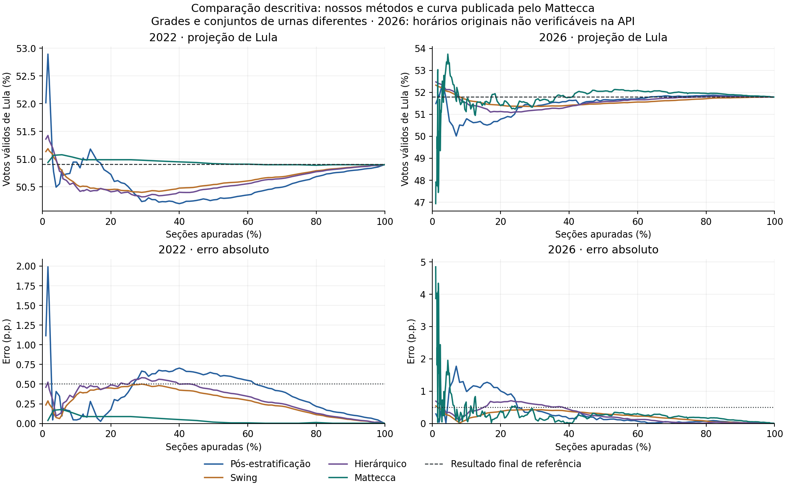

poststrat
Pós-estratificação
Usa a preferência observada em cada município. Sem votos locais, busca a proporção da UF e depois a nacional.
Abrir o exemplo →Presidente · Segundo turno · Dados TSE
Avaliação da convergência e da estabilidade de três estimadores nos pleitos de 2018, 2022 e 2026, com referência no primeiro turno do mesmo ano.
As quatro páginas funcionam offline e compartilham o mesmo recorte de anos.
Dois candidatos, parcial tracejada, projeção sólida e faixas experimentais. Inspecione as curvas por hover ou toque.
Compare os três modelos, o erro e a variação. Consulte os marcos de 1%, 2%, 5% e 10%.
Veja a evolução dos votos válidos por percentual de seções, com a fonte e a cronologia identificadas.
Exemplos ilustrativos manipuláveis, fórmulas e contas. Os dados didáticos são fictícios.
Todos usam o primeiro turno do próprio ano e recebem os mesmos snapshots.
Usa a preferência observada em cada município. Sem votos locais, busca a proporção da UF e depois a nacional.
Abrir o exemplo →Ajusta a mudança entre turnos por WLS, usando preferência histórica e porte municipal como covariáveis.
Abrir o exemplo →Estima coeficientes nacionais, regionais e estaduais. A regularização aproxima grupos com pouca evidência do nível superior.
Abrir o exemplo →A1/(A1+B1). O volume usa todos os válidos do primeiro turno, incluindo candidatos eliminados. Os parâmetros atuais são fixos e não foram calibrados contra o resultado alvo.Código, configuração, fontes e resultados de referência ficam no repositório.
.env../scripts/cpu.sh --read-only scripts/reproduce.py \
--output reports/runs/reproducao-01 \
--compare-to reports/cpu-study-20261107| Ano | Candidato A | Candidato B | Seções |
|---|---|---|---|
| 2018 | Fernando Haddad | Jair Bolsonaro | 454.448 |
| 2022 | Luiz Inácio Lula da Silva | Jair Bolsonaro | 472.028 |
| 2026 | Luiz Inácio Lula da Silva | Flávio Nantes Bolsonaro | 499.205 |
2018: reconstrução com votos finais na primeira totalização por seção; inclui oito registros tardios de 2019. 2022/2026: recebimento de BUs, diferente da publicação das parciais ao público.
O código abaixo é gerado diretamente de src/projecao/models.py. A API recebe somente snapshot, histórico e configuração.
"""Torch estimators. No final-result table is accepted by this module."""
from dataclasses import dataclass, asdict
import math
import pandas as pd
import torch
KEY = ['uf', 'municipality']
OBS = KEY + ['n_observed', 'votes_a', 'votes_b']
@dataclass
class Config:
method: str = 'poststrat'
device: str = 'cpu'
lambda_region: float = 300_000.
lambda_uf: float = 150_000.
lambda_turnout: float = 200_000.
@dataclass
class History:
frame: pd.DataFrame
@dataclass
class Snapshot:
frame: pd.DataFrame
@classmethod
def empty(cls):
return cls(pd.DataFrame({c: pd.Series(dtype='str' if c in KEY else 'float64') for c in OBS}))
@dataclass
class Projection:
share_a: float
share_b: float
votes_a: float
votes_b: float
fraction_sections: float
observed_valid: float
turnout_ratio: float
method: str
def to_dict(self):
return asdict(self)
def predict(snapshot: Snapshot, history: History, config: Config) -> Projection:
if config.method not in {'poststrat', 'swing', 'hierarchical'}:
raise ValueError(f'Unknown method: {config.method}')
if config.device not in {'cpu', 'cuda'}:
raise ValueError('device must be cpu or cuda')
if config.device == 'cuda' and not torch.cuda.is_available():
raise RuntimeError('CUDA requested but unavailable; check Docker --gpus all')
if min(config.lambda_region, config.lambda_uf, config.lambda_turnout) < 0:
raise ValueError('Penalties must be nonnegative')
f=history.frame
if f.empty or f.duplicated(KEY).any() or snapshot.frame.duplicated(KEY).any():
raise ValueError('History must be nonempty and municipal keys unique')
if not snapshot.frame.merge(f[KEY], on=KEY, how='left', indicator=True)['_merge'].eq('both').all():
raise ValueError('Observed municipality absent from universe')
f=f.merge(snapshot.frame[OBS], on=KEY, how='left', validate='one_to_one')
f[['n_observed','votes_a','votes_b']]=f[['n_observed','votes_a','votes_b']].fillna(0)
numeric=['n_sections','ref_share','ref_per_section','ref_size','n_observed','votes_a','votes_b']
if not all(math.isfinite(float(v)) for v in f[numeric].to_numpy().ravel()):
raise ValueError('Nonfinite input')
if (f[['n_sections','ref_per_section','ref_size','n_observed','votes_a','votes_b']] < 0).any().any():
raise ValueError('Negative counts')
if (f.n_observed>f.n_sections).any() or f.n_sections.sum()<=0 or not f.ref_share.between(0,1).all():
raise ValueError('Invalid section counts or historical proportions')
def t(values): return torch.tensor(values, dtype=torch.float64, device=config.device)
n=t(f.n_sections.to_numpy()); no=t(f.n_observed.to_numpy())
a=t(f.votes_a.to_numpy()); b=t(f.votes_b.to_numpy()); valid=a+b
prior=t(f.ref_share.to_numpy()); per=t(f.ref_per_section.to_numpy())
observed=valid>0
matched=torch.tensor(f.matched.to_numpy(dtype=bool),device=config.device)
exposure=per*no
turnout_mask=matched & (no>0)
den=exposure[turnout_mask].sum()+config.lambda_turnout
ratio=(valid[turnout_mask].sum()+config.lambda_turnout)/den if den>0 else t(1.)
remaining=(n-no)*per*ratio
shares=prior.clone()
current=valid.clamp_min(1)
national=a.sum()/valid.sum() if valid.sum()>0 else (prior*per*n).sum()/(per*n).sum().clamp_min(1)
if config.method=='poststrat':
for uf in f.uf.unique():
m=torch.tensor(f.uf.eq(uf).to_numpy(),device=config.device)
fallback=a[m].sum()/valid[m].sum() if valid[m].sum()>0 else national
shares[m]=torch.where(observed[m], a[m]/current[m], fallback)
else:
# Standardization uses historical covariates and structural section counts only.
xraw=torch.stack([prior,torch.log10(t(f.ref_size.to_numpy()).clamp_min(1))],dim=1)
weights=per*n
mean=(xraw*weights[:,None]).sum(0)/weights.sum().clamp_min(1)
scale=torch.sqrt(((xraw-mean)**2*weights[:,None]).sum(0)/weights.sum().clamp_min(1))
scale=torch.where(scale>1e-12,scale,torch.ones_like(scale))
X=torch.cat([torch.ones((len(f),1),device=config.device,dtype=torch.float64),(xraw-mean)/scale],dim=1)
y=a/current-prior
train=observed & matched
zero=torch.zeros(3,device=config.device,dtype=torch.float64)
def fit(mask,parent,penalty):
if not mask.any(): return parent.clone()
x=X[mask]; w=valid[mask]; target=y[mask]
if penalty==0:
return torch.linalg.pinv(x*torch.sqrt(w)[:,None])@(target*torch.sqrt(w))
A=x.T@(w[:,None]*x)+penalty*torch.eye(3,device=config.device,dtype=torch.float64)
rhs=x.T@(w*target)+penalty*parent
return torch.linalg.solve(A,rhs)
beta=fit(train,zero,0.)
shares=prior+X@beta
if config.method=='hierarchical':
for region in f.region.unique():
rm=torch.tensor(f.region.eq(region).to_numpy(),device=config.device)
br=fit(train & rm,beta,config.lambda_region)
for uf in f.loc[f.region.eq(region),'uf'].unique():
um=torch.tensor(f.uf.eq(uf).to_numpy(),device=config.device)
bu=fit(train & um,br,config.lambda_uf)
shares[um]=prior[um]+X[um]@bu
shares=shares.clamp(0,1)
va=float((a.sum()+(shares*remaining).sum()).item())
vb=float((b.sum()+((1-shares)*remaining).sum()).item())
total=va+vb
share=va/total if total>0 else float(national.item())
return Projection(share,1-share,va,vb,float((no.sum()/n.sum()).item()),float(valid.sum().item()),float(ratio.item()),config.method)
def convergence(fractions, errors_pp, epsilon):
"""First sampled point with all subsequent errors <= epsilon (not interpolated)."""
if len(fractions)!=len(errors_pp) or not len(fractions):
raise ValueError('Nonempty arrays of equal length required')
if any(b<=a for a,b in zip(fractions,fractions[1:])):
raise ValueError('Fractions must be strictly increasing')
last_bad=-1
for i,e in enumerate(errors_pp):
if not math.isfinite(e) or e>epsilon: last_bad=i
return fractions[last_bad+1] if last_bad+1<len(fractions) else None
Resultado descritivo preservado como complemento. As fontes usam grades e conjuntos de urnas diferentes. Na API de 2026 consultada, 371 de 375 registros tinham o mesmo horário posterior à eleição; a curva não comprova o desempenho de cada projeção ao vivo.
